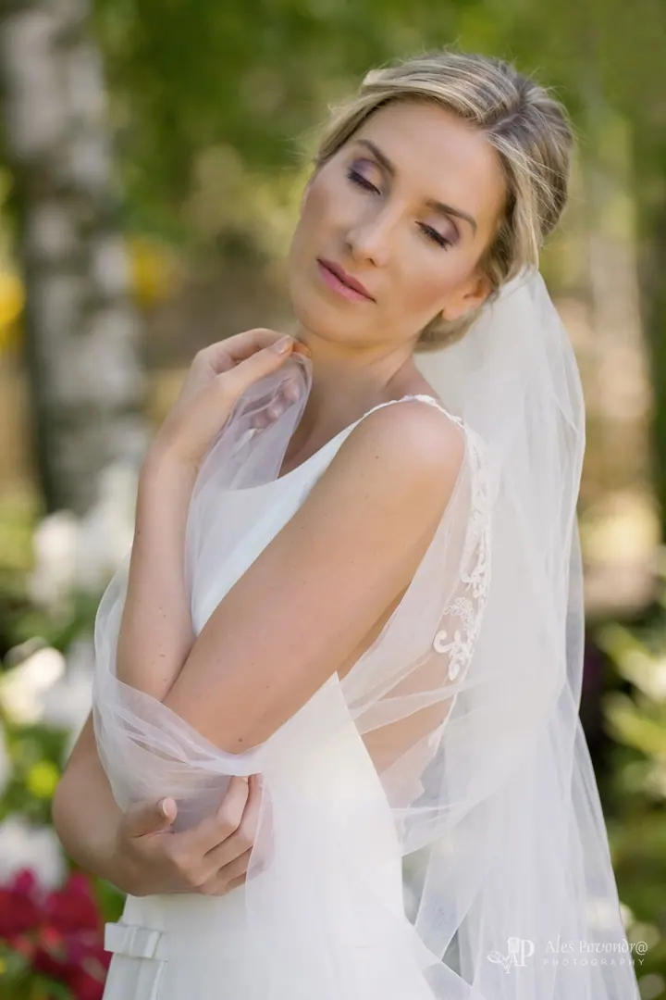
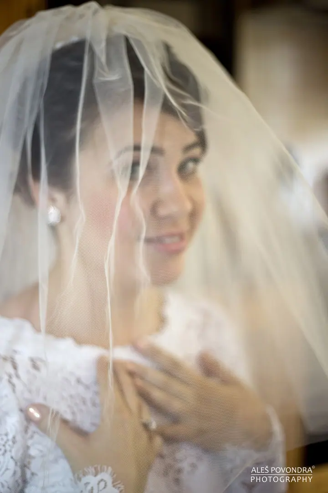
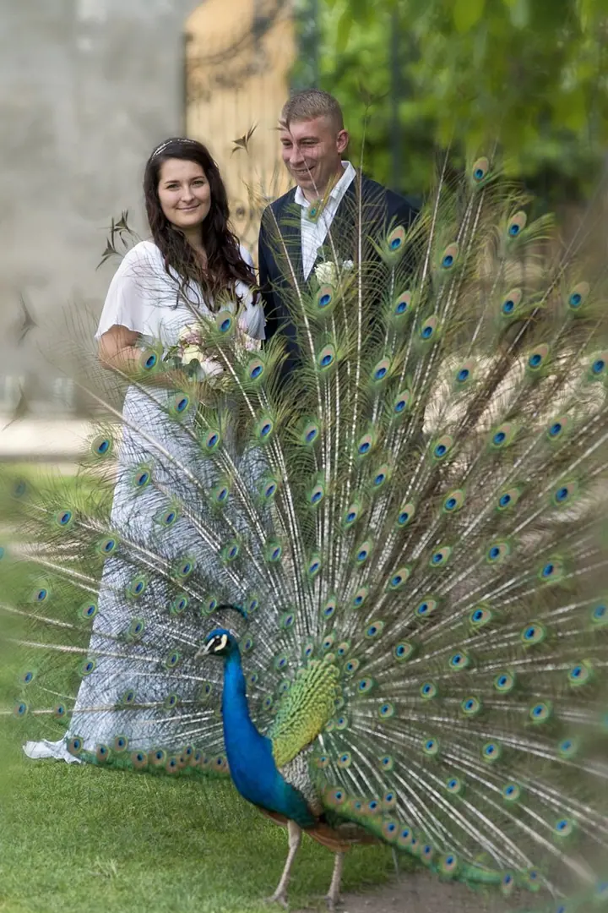
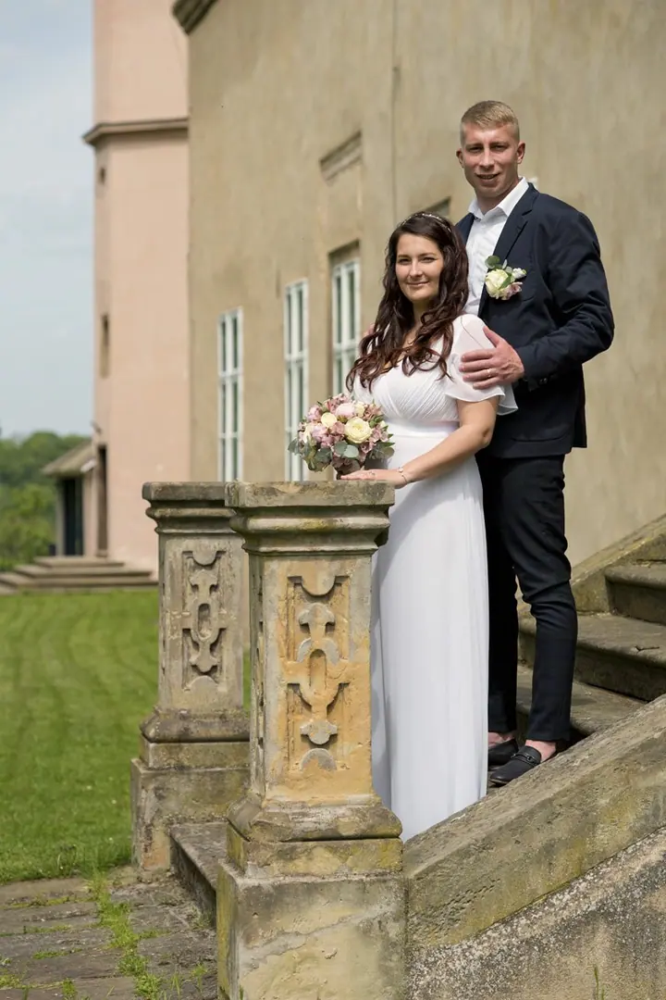
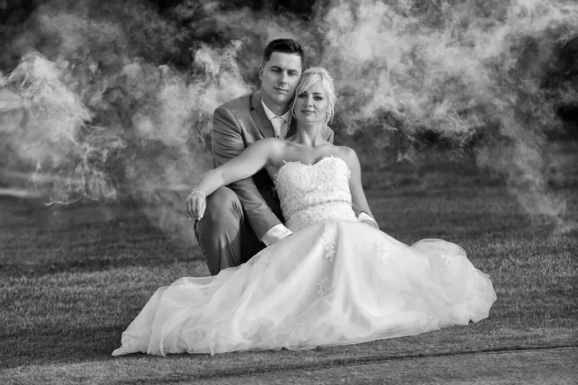
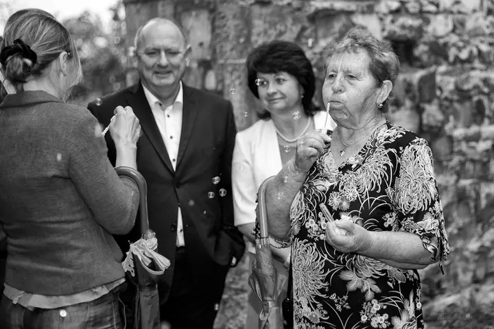

Svatební focení
Fotím přirozenou reportáž vašeho velkého dne. Podle vašeho přání to může být jen obřad, půlden, nebo celý den od líčení až po večerní zábavu.





Jmenuji se Aleš Povondra a jsem portrétní a svatební fotograf z Kladna. Fotografování je pro mě hra se světlem, při které vznikají neopakovatelné okamžiky. Nejradši fotkami vyprávím příběhy a snažím se do nich vtěsnat emoce, pocity a radost.
Více o mně
„Rád vyprávím příběhy prostřednictvím fotografií.“
— Aleš Povondra
Fotím přirozenou reportáž vašeho velkého dne. Podle vašeho přání to může být jen obřad, půlden, nebo celý den od líčení až po večerní zábavu.
Fotíme v klidu a bez stresu z počasí, v přírodě nebo v exteriéru podle domluvy. Navíc se před svatbou poznáme a fotky můžete použít i na oznámení.
Portréty fotím v ateliéru i venku v přírodě, osobní i business. Asi za hodinu focení vybírám z 30 až 50 záběrů a vy dostanete kolem 10 upravených fotografií.
Pro začátečníky i pokročilé: základy ovládání fotoaparátu a portrétní fotografie. Workshop připravím na míru, ať chcete fotit v přírodě, ve městě, v ateliéru, nebo sport.
Fotografování je moje vášeň. Mám rád kreativitu a nápaditost, takže by se dalo říct, že fotím úplně všechno. Specializuji se ale na svatby a portréty, ať už v ateliéru, nebo lifestyle venku v přírodě.
Na svatbách fotím přirozené fotografie a reportáž celého dne v Kladně, Praze a okolí. Než se do toho pustíme, rád se s vámi sejdu osobně. Projdeme spolu váš svatební plán a domluvíme se na všem tak, abyste byli spokojení.
Mimo svatby fotím reportáže, sport od golfu po box, produkty a interiéry. Na cestách mě baví krajina, zvířata, květiny a makro detaily. A kdo se chce naučit fotit sám, tomu připravím workshop na míru.
Sejdeme se a projdeme váš svatební plán. Domluvíme rozsah focení, místa a všechno, na čem vám záleží.
Pokud chcete, nafotíme se ještě před svatbou, v klidu a bez stresu z počasí. Poznáte, jak fotím, a fotky se hodí i na oznámení.
Fotím přirozenou reportáž od příprav přes obřad a skupinové foto až po hostinu, dort a první tanec, podle balíčku, který si vyberete.
Vybrané fotografie pečlivě upravím a předám ve vysoké kvalitě ve formátu JPEG, na vyžádání předem i v TIFF. Tisk na papír nebo plátno můžete přiobjednat.
Záleží na balíčku. Při focení obřadu je to kolem 80 upravených fotek, u půldne kolem 120 a u celodenního focení 200 až 400 upravených fotografií.
Ne. Předávám jen vybrané a upravené fotografie ve vysoké kvalitě ve formátu JPEG, na vyžádání předem i v TIFF.
Ano, za vámi rád přijedu. Jen počítejte s tím, že cestovní náklady nejsou v balíčcích zahrnuté.
Ano, prodávám dárkové poukazy na jakékoliv focení, od svatebního přes portrét až po workshop.